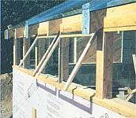
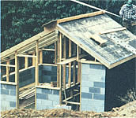
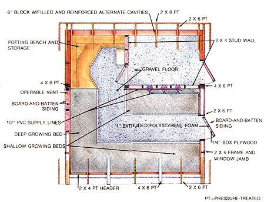
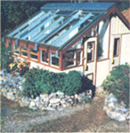
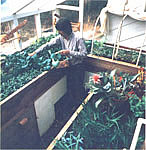
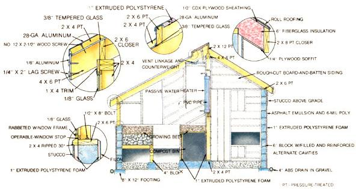

Here are the details on the latest addition to our ongoing self-reliant homestead project.
In our last issue, we reviewed the progress made at - and plans for - MOTHER's self-reliant homestead, and gave you a glimpse of new construction at the site. This time we offer the construction details on our latest project: a "bioshelter" greenhouse that integrates plant propagation, food production, and chicken and rabbit quarters. This unique family-size structure gets its winter warmth from the sun, livestock body heat, actively decomposing compost, and - in the coldest weather - a catalytic kerosene heater. (It's also specially designed to distribute maximum heat to the growing bed's soil, increasing production by boosting the bed temperature to 80°F.) As you can imagine, this multipurpose structure is rapidly becoming the hub of horticultural activity at the homestead. We'll report more on how it works - and how to work it - as we gain experience. Here we'll go into building it.
The structure of the greenhouse is conventional. Six-inch block walls - reinforced in alternate cavities with concrete and 1/2" steel rods-rest on 8" X 12" poured footings. All of the masonry walls are either backfilled or bermed up with earth for energy efficiency. Above the grade line, stud walls rise with insulated 2 X 4 framing. The roof framing consists of rafters on 24" centers. In the rear, 2 X 6 rafters are covered with 1/2" CDX plywood, 15-pound felt, and roll roofing. The spaces between the 2 X 6's are filled with fiberglass batt, a 6-mil vapor barrier is stapled to the underside of the rafters, and the interior is finished with rough-sawed, random-width, board-and-batten siding. The glazed front roof must bear the weight of 3/8" X 4' 8" X 8' 8" sheets of tempered glass, so the rafters under the joints of the panes are full 4" X 6" beams. Alternate front rafters are 2 X 6's, and all the lumber contacting either glazing, sills, or growing beds is pressure-treated.
The array of diagrams and photos on the next two pages should offer sufficient detail to allow anyone with building experience to duplicate the greenhouse, but we'd like to share a few extra notes and tips that may be helpful.
The code: In our area, building inspectors are mainly concerned with residential structures and other buildings that have utilityconnected electricity. For that reason, there were no restraints on how we built what is essentially considered, in Transylvania County, North Carolina, an outbuilding.
Though we're confident that our greenhouse is structurally sound, you may find that aspects of our design won't meet your local code. For example, below-grade, 6" block walls - no matter how well reinforced - aren't allowed in some areas. So be sure to check with your building inspector concerning the details of this design before you begin construction.
Should you earth berm? Banking the walls of a building with earth is a good way to minimize heat loss . . . if the site lends itself to such a technique. We happen to have quite suitable slope and soil for earth sheltering . . . but we wouldn't necessarily recommend it if you're building on flat ground or in expansive clay. Instead, you might want to build with minimally reinforced concrete block (or simply frame the entire structure) above ground and increase the insulation level. There's also a good chance that this approach would prove to be less expensive.
Masonry insulation: Use extruded polystyrene foam, and add an extra inch if you experience more than 4,500 heating degree-days in your locale. Use either wire lath and stucco or a resilient stucco such as PennKote to protect the exposed insulation from sunlight.
Waterproofing: We don't consider small amounts of seepage to be a particular problem in a greenhouse, so the below-grade walls of the greenhouse are really more water- resistant than waterproof.
Floors: We used a 6" layer of gravel for our floor. A properly sloped concrete floor with appropriate drains would be nice . . . but expensive.
Pressure-treated lumber: Pressure-treated lumber has been specified in all areas that are likely to be moist. There are recognized hazards to the use of such lumber, but the only alternatives are very expensive: cypress, redwood, or some other rot-resistant wood. Believe us, standard spruce-fir boards will deteriorate quickly inside a humid greenhouse.
Glazing: Our roof glazing is recycled 3/8" X 4' 8" X 8' 8" tempered glass that had been used to manufacture plexiglass. This isn't a standard store-bought size, so if you're unable to find recycled material, you may have to have the glass cut to size or alter the rafter spacing to suit a different size pane. Other glazing in the building may be tempered or not, depending on your concern and your pocketbook. (Tempered glass would certainly be safer, but it's more expensive than single-strength and would have to be custom-cut to the odd shapes.)
Roof glazing strips: To secure and seal the roof glazing, we set the sheets about 3/4" apart in beds of silicone caulk, added another layer of the sealant on top, pulled pressuretreated 2 X 4's down on the glass with screws through the gaps, and covered the wood with aluminum flashing.
Drainage: Water-shedding details, such as the bevel on the window sills, are quite important for preventing rot, even if pressure-treated lumber is used. In fact, we face-nailed a drip edge all the way around the exposed part of the building at the sill level. This was made by ripping 2 X 4's in half on a 30° bevel. The strip not only allows water to run off the walls but also serves as an upper stop for the rigid insulation attached to the masonry below.
Exterior doors: We made the doors ourselves. They're built up on a 1" X 3" lumber frame, insulated with 1" polystyrene board, and sheathed with 1/4" BDX plywood inside and 1" rough-sawed boards out. A plexiglass window is fitted in the upper portion, and a swinging animal-access door is set into the bottom area.
We used two different methods of building the growing beds in the greenhouse. The bed against the west wall, which is used for propagation, is supported above the floor on 4 X 4 posts and has a base layer of rock with the growing medium above. Solar-heated air picked up at the roof peak by a squirrel cage blower (powered by a photovoltaic panel) is forced down through aluminum dryer duct and into the rocks to boost soil temperature. The beds on the south and partition walls have sealed and insulated cavities beneath them that are filled with compost. Heat, moisture, and airborne nutrients can filter up to the growing medium through treated 2 X 4's spaced several inches apart and covered with wire mesh. Solar-heated air can also be distributed to the cavities . . . to warm either the compost or the soil above.
Our greenhouse was designed first and foremost to grow plants as effectively as possible. To that end, some compromises had to be made in its ultimate energy efficiency. Overhead and east- and west-wall glazing helps plants grow but is detrimental to overall solar heating in the crucial winter months. Furthermore, all the interior surfaces of the greenhouse are painted white to reflect light (not absorb it) and thereby reduce phototropism. We've accepted the fact that when it gets really cold out and a batch of compost doesn't happen to be at its peak (the bioheat does work in cycles that may not correspond to the weather), backup heat is needed. In fact, during a record-breaking bitter spell in January, when the mercury dropped to -21°, many plants died despite the kerosene heater we kept running day and night. Soil temperatures stayed at acceptable levels, but the air just plain got too cold.
For the most part, though, the greenhouse has made it possible for us to maintain substantial plant production throughout the winter in a 4,500-degree-day climate. And the head start it will give us on the outdoor growing season is enough to justify its construction.
EDITOR'S NOTE: Though the drawings with this article cover most of the aspects of building the greenhouse, you might want to get full-size construction blueprints (which include some added detail) before beginning work. You can order the bioshelter greenhouse plans from Mother's Plans, P.O. Box A, East Flat Rock, NC 28734, for $10.00, plus $1.00 postage and handling. If you'd like to pick up a set of plans for our low-cost earth-sheltered house at the same time, send a total of $20.00 plus the $1.00 shipping and handling. Or, if you've already bought our low-cost earth shelter plans, you can add the greenhouse plans to your collection for $5.00 plus $1.00 shipping and handling by sending along some proof of purchase with your order.
|
 |
 |
 |
|
 |
 |
 |